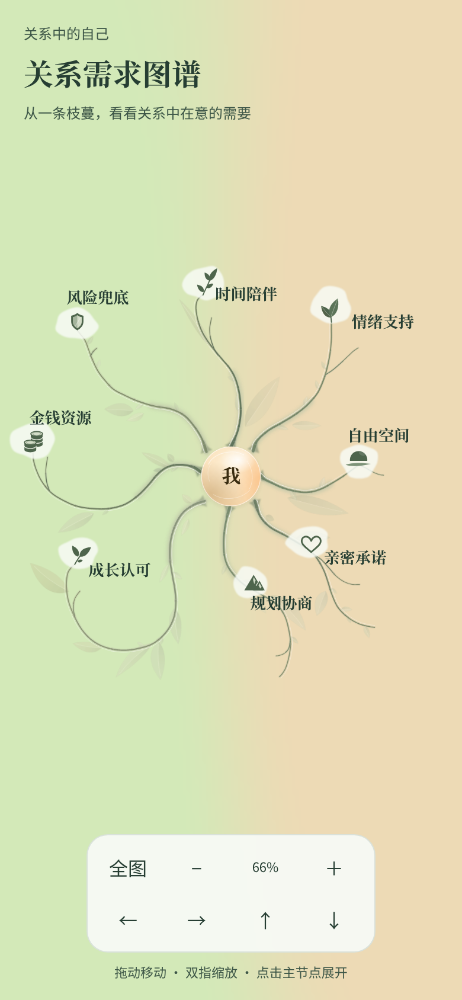

知遇测评 · 开发研究页
同一枝图，不同深度
中性结构样例，不代表人格维度、心理规则或用户分数。根为第 0 层；主节点为第 1 层。短枝止于第 2 层，深枝同时包含第 3、5、6 层末端。A、B 各自记录，可同时存在。
模型与交互约束
每个节点具有固定 ID、parent、depth、type。深度由父链计算；中间节点不设热点，只有主节点用于聚焦、终端叶片用于详情。聚焦后从第 2 层开始，每次放大按真实深度继续显示；缩小时同步移除隐藏热点。关闭详情保持相机，返回全图收起深层内容。
A、B 状态独立，既不互斥也不归一化。样例仅有“有示例记录”和“未知”两种状态，没有百分比或强度。正式画像仍采用有依据的主节点与末端含义，不用中间枝条虚构业务层级。
正式关系图：语义适配前后对照
相同 390px 视口、减弱动态条件下的浏览器截图；本次语义适配保持既有手绘构图。

